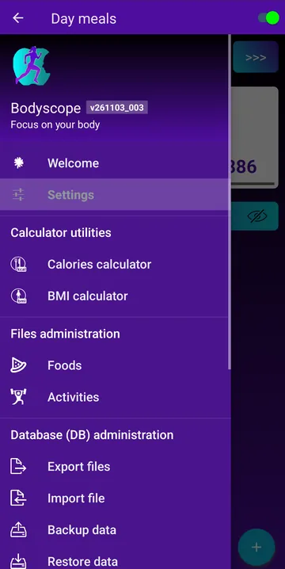
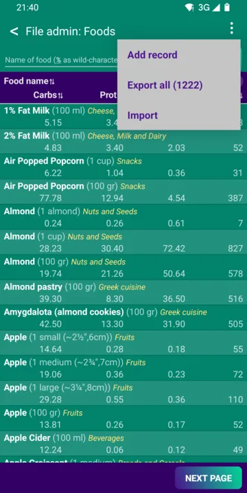
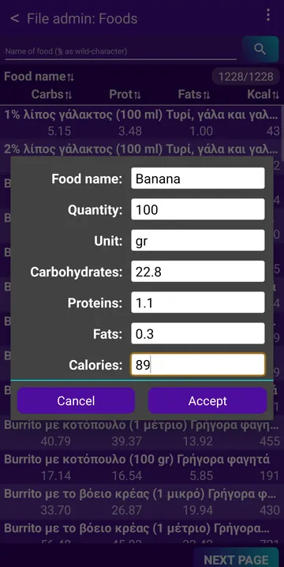
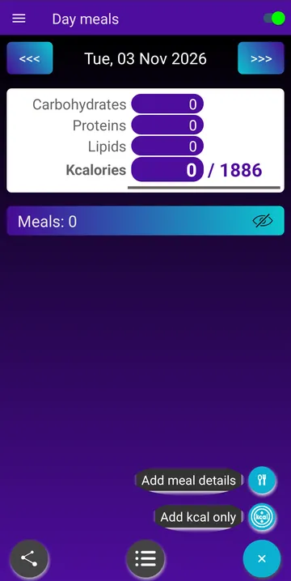
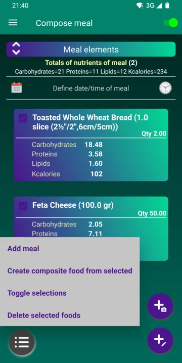
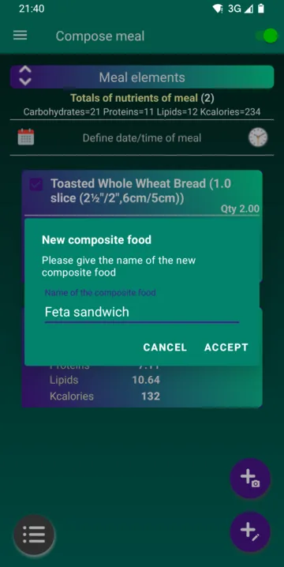

Ускладите оно што једете са тим колико се крећете.
Bodyscope броји ваше кораке, бележи шетње и трчања, води евиденцију оброка и приказује енергетски биланс сваког дана: колико сте унели наспрам колико сте потрошили. Све остаје на вашем телефону.
Android 6.0 или новији · Без налога · Без реклама · Без праћења
Све за уравнотежен дан
Храна са једне стране, кретање са друге, а ваш профил у средини, да би бројеви одговарали вама, а не просечној особи.
Оброци и намирнице
Састављајте оброке из почетног списка од око 1.200 намирница или претражујте базе USDA и Open Food Facts. Калорије и хранљиве материје се сабирају уместо вас. Или фотографишите тањир и препустите Claude AI да препозна намирнице или сачувајте цео тањир као нову намирницу (потребан је ваш кључ).
Бројач корака
Броји ваше кораке у позадини цео дан, са дневним циљем и вашом дужином корака за ходање и трчање.
Шетње и трчања
Забележите шетњу или трчање са раздаљином, временом и темпом, погледајте руту на OpenStreetMap мапи и добијајте гласовна обавештења успут.
Друге активности
Бележите вожњу бицикла, пливање, вежбе снаге, јогу, баштованство и још много тога. Енергија сваке се рачуна према вашој тежини и интензитету активности.
Ваш дневни биланс
Унете наспрам потрошених калорија, из ваших базалних потреба, корака, трчања и активности. Задајте циљну тежину и видите колико калорија дневно вас доводи до ње.
Графикони и историја
Осврните се на дане и недеље: оброци по дану, хранљиве материје у периоду и историја ваших шетњи и трчања.
Калкулатори
Калкулатор ИТМ и калкулатор калорија који користе ваше године, пол, висину, тежину и колико сте активни.
Резервне копије под вашом контролом
Направите резервну копију података у фасцикли по избору, ручно или аутоматски сваког дана, на 3 дана или недељно, и вратите их на нов телефон.
19 језика, 6 тема
Користите Bodyscope на свом језику и изаберите боје које волите, од светлих до тамне теме „месечина“.
Како ради
Три ствари за подешавање, а онда Bodyscope води бројеве дана уместо вас.
Реците нешто о себи
Унесите датум рођења, пол, висину и тежину. Bodyscope рачуна колико енергије вашем телу треба у мировању.
Бележите шта једете
Додајте сваки оброк са списка намирница или потражите у бази намирница оно чега нема.
Само се крећите
Укључите једном бројање корака и кораци се броје цео дан. Започните шетњу или трчање, или забележите другу активност, и видите биланс дана.
Ваши подаци остају на телефону
Bodyscope ради на вашем уређају. Нема налога за прављење нити ичега скривеног што шаље ваш профил, оброке или активности на сервер.
-
Без налога, без пријавеИнсталирајте и почните. Ништа за регистрацију.
-
Без реклама, без праћењаНема рекламног ни аналитичког кода у апликацији.
-
Телефон напушта само оно што тражите или фотографишетеКада претражујете онлајн базу намирница, том сервису се шаљу само речи претраге. Фотографија оброка коју одлучите да анализирате иде компанији Anthropic, са вашим кључем.
-
Копије иду где ви изаберетеФасцикла на телефону, SD картица или ваша фасцикла у облаку.
Питања
Она која најчешће чујемо.
Да ли Bodyscope нешто кошта?
Не. Bodyscope је бесплатан, без реклама и без куповина у апликацији.
На којим телефонима ради?
На сваком телефону са Android 6.0 (Marshmallow) или новијим.
Како да га инсталирам са овог сајта?
Преузмите APK датотеку дугметом испод и отворите је на телефону. Први пут ће Android тражити да дозволите инсталирање апликација из прегледача или менаџера датотека. Bodyscope сам проверава нове верзије (О апликацији → Провери ажурирања).
Како да пребацим податке на нов телефон?
Користите Резервна копија података у менију (или укључите аутоматску копију у Подешавањима), копирајте датотеке на нов телефон и тамо користите Враћање података.
Неке речи су на енглеском, а не на мом језику. Зашто?
Ваш језик можда још није потпуно преведен. Већина превода је прво урађена аутоматски, па неки могу бити и погрешни. Радо ћемо прихватити вашу помоћ: пишите нам.
Могу ли да предложим функцију или пријавим проблем?
Наравно. Пишите на bodyscope.team@gmail.com или користите О апликацији → Пишите аутору у апликацији. Читамо сваку поруку.
Како да додам нову намирницу?
Постоје два начина. У оба намирница се додаје у датотеку намирница, спремна за све ваше оброке.
Снимци екрана су направљени са апликацијом на енглеском. На вашем језику менији и називи намирница приказују се на српском.
1. Директно, у датотеци намирница
- Отворите мени (☰) и у одељку Управљање датотекама додирните Намирнице.
- Додирните ⋮ горе десно и изаберите Додај запис.
- Унесите назив намирнице, количину и њену јединицу (на пример 100 gr или 1 кришка), као и угљене хидрате, протеине, масти и калорије те количине. Додирните Прихвати.



2. Док састављате оброк: сложена намирница
- У Дневни оброци додирните дугме доле десно и изаберите Додај детаље оброка.
- Додирните + и додајте састојке, сваки са својом количином.
- Означите састојке намирнице, додирните дугме менија доле лево и изаберите Направи сложено јело од изабраног.
- Дајте намирници назив и додирните Прихвати. У оброку нова намирница замењује састојке, а додаје се и у датотеку намирница.



Како раде „Оброк са фотографије“ и „Нова намирница са фотографије“?
Bodyscope може да препозна намирнице на вашем тањиру са фотографије, помоћу Claude, вештачке интелигенције компаније Anthropic. То је опционо и захтева ваш сопствени API кључ компаније Anthropic. Може да дода препознате намирнице у оброк или да сачува цео тањир као једну нову намирницу у вашој датотеци намирница.
Коришћење
- У Дневни оброци додирните дугме доле десно и изаберите Додај детаље оброка.
- Додирните дугме са + и камером (Оброк са фотографије) и изаберите Снимите фотографију или Изаберите из галерије.
- Claude набраја намирнице које види, са процењеном тежином и калоријама. Уклоните ознаку са погрешног и додирните Додај у оброк.
- Додирните намирницу у оброку да исправите њену количину, па сачувајте оброк као и обично.
Чување тањира као нове намирнице
- Отворите мени (☰), идите на Управљање датотекама › Намирнице, додирните дугме камере поред претраге (Нова намирница са фотографије) и снимите или изаберите фотографију.
- Уклоните ознаку са погрешног и додирните Настави.
- Изаберите Једна порција (цео тањир, на пример око 700 g) или На 100 g.
- Проверите назив, количину, јединицу и вредности, па додирните Прихвати. Када промените количину, вредности се мењају сразмерно; уклоните ознаку са Сразмерна промена вредности да бисте променили само количину.
- Тањир је сада намирница као и свака друга: додајте га у оброке без нове фотографије и без новог трошка.
Како добити кључ
- Направите налог на console.anthropic.com и купите мало кредита.
- Направите API кључ и копирајте га.
- У Bodyscope отворите мени (☰), идите у Подешавања › Подешавања исхране, додирните Ваш кључ за Claude API и налепите га.
Цена и приватност
Anthropic наплаћује сваку фотографију на ваш кључ: по садашњим ценама око 0,001–0,002 америчка долара по фотографији, па 100 фотографија кошта око 10–20 центи. Кредит се купује унапред, од око 5 долара. Сам Bodyscope не наплаћује ништа.
Фотографија иде са вашег телефона директно компанији Anthropic, и само када користите ову функцију; између нема сервера Bodyscope-а. Кључ се чува у подешавањима апликације, која се чувају и у вашим резервним копијама, зато их држите приватним.
Набавите Bodyscope
Бесплатно за Android. Преузмите га, отворите датотеку на телефону и то је то.
Преузми APK